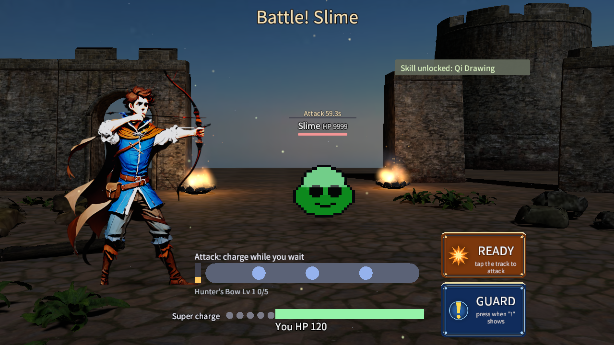

How the 2D fighters live in the 3D stage
The battle in TOMS (docs/gameplay/21): a real 3D place, and 2D characters whose own sprites are drawn in it, lit by its lights and hidden by its walls.

1 One scene: the sprites are 3D objects
There is no picture in between. The fighter's sprites (body, arms, bow, cape) become triangles in the 3D world, drawn by the same renderer and shader as the ruins, with the same lights and the same depth buffer. Only the HUD stays on top.
2 From a pixel to a point in metres
- Each fighter has a mark on the 3D ground (its feet) and a height in metres:
battle.json"marks","heights". - The game draws the fighter into its usual 2D layout box. The box's bottom middle is the anchor; metres per pixel = height ÷ box height.
- One matrix maps every pixel (x, y) to the world: anchor → feet, x along the camera's right, y down → metres down. Every corner of every sprite goes through it, including the parts drawn outside the box.
- The 3D renderer draws those triangles with the models' shader: lit (PBR: the moon, the fires, the hit flashes), depth tested, alpha blended (smooth edges), sorted with the scene by distance. A little glow of its own keeps it readable at night.
- The fires are drawn the same way at the brazier, unlit (they are light), so a fighter in front hides them.
3 Each frame, in order
| # | Who | What |
|---|---|---|
| 1 | Game | Decides the camera (the stage's shot, breathing, push-ins, orbits, the low close-up, the shake) and the lights (moon, fires, flashes). |
| 2 | Host | Draws the 3D stage and gets back the camera's matrix. |
| 3 | Game | Draws each fighter and fire inside a world group: the 2D renderer keeps their triangles in metres instead of drawing them on the screen. |
| 4 | Host | Gives those triangles to the 3D stage, which draws them in the same scene, same frame. |
| 5 | Game | Projects the marks to screen boxes, only for what stays 2D: damage numbers, hints, today's 2D hit effects. |
4 The key code
The game draws a fighter in the world: Game::f_DrawBattle3DFighter in src/core/game/core/game_combat.cpp
glm::vec2 anchor(box.x + box.w / 2, box.y + box.h); // the feet, in the 2D drawing glm::mat4 m = f_Battle3DSpriteMatrix(anchor, feetInWorld, heightMetres / box.h); m_pRen->f_BeginWorld(&m[0][0], true); // lit m_upPlayerView->f_Draw(m_pRen, box); // the same 2D drawing as before m_pRen->f_EndWorld();
The matrix: Game::f_Battle3DSpriteMatrix
right = camera's right on the ground; up = (0, 1, 0); normal = toward the camera col0 = right * metresPerPx; // x across col1 = -up * metresPerPx; // y down the screen = down in the world col2 = normal; // for the lighting col3 = at - right * anchor.x * s + up * anchor.y * s; // the anchor pixel lands on the feet
The 2D renderer keeps the triangles: BgfxRenderer::f_WorldTriangles in src/engine/src/bgfx_renderer.cpp
world.x = M[0]*x + M[4]*y + M[12]; // every corner of every quad and mesh
world.y = M[1]*x + M[5]*y + M[13];
world.z = M[2]*x + M[6]*y + M[14];
The scene draws them: BattleStage::f_DrawSprites → GltfRenderer::f_DrawSprites
// a material like a glTF one: matte, double sided, blended, its texture the 2D atlas f_SubmitPrimitive(sprites, material, ..., sortDistance); // the models' shader: lit, depth tested
5 What it gives
| Thing | Now |
|---|---|
| Dynamic light | When the slime hits, the red flash lights the archer himself: his brightness goes 76 → 117 and he turns red. The fires warm the side facing them. |
| Depth | The left brazier's flame is behind the archer's bow. A ruin in front of a fighter hides that part of him. |
| Nothing cut | The raised hand, the bow over the head, a lunge: all drawn, wherever they go. |
| Sharp | Each sprite is drawn once, straight from its atlas, not through an in-between picture. |
| Fallback | "sprites": {"off": true} in the stage row: the fighters are drawn 2D over the stage as before. |
6 Limits for now
effects The battle's 2D hit effects and damage numbers are still drawn on the screen, over the scene. B3 (doc 21) moves the effects into 3D.
layers Inside the scene, a clip's layer effects (glow, motion blur, outline) are drawn without the effect, and GPU particles are not drawn: both work on screen pictures.
flat The sprites lie in one plane: the light lights them as one surface facing the camera, and they cast only the soft disc as shadow.
web Checked on Windows (Direct3D 11), not yet in a browser.
More: docs/gameplay/21_BATTLE_3D.md §4.3 and §8, src/game/src/battle_stage.cpp (the scene and the sprites),
Game::f_Battle3D* in src/core/game/core/game_combat.cpp (the camera, the matrix, the lights).